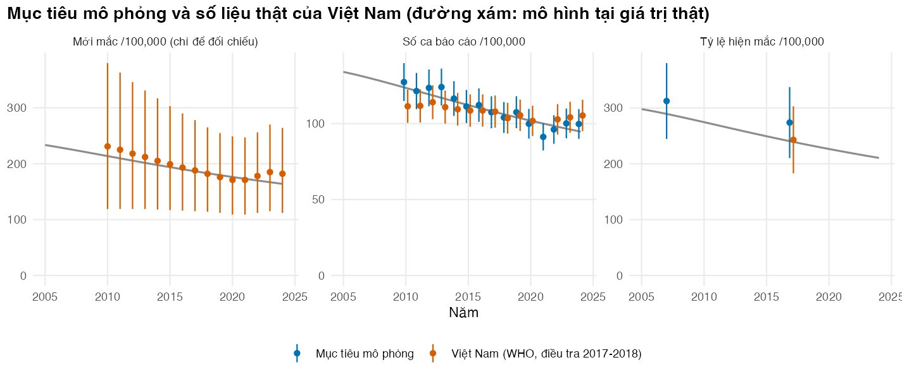
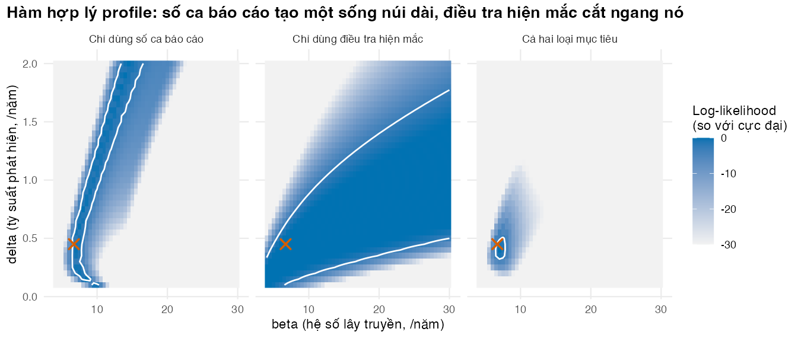
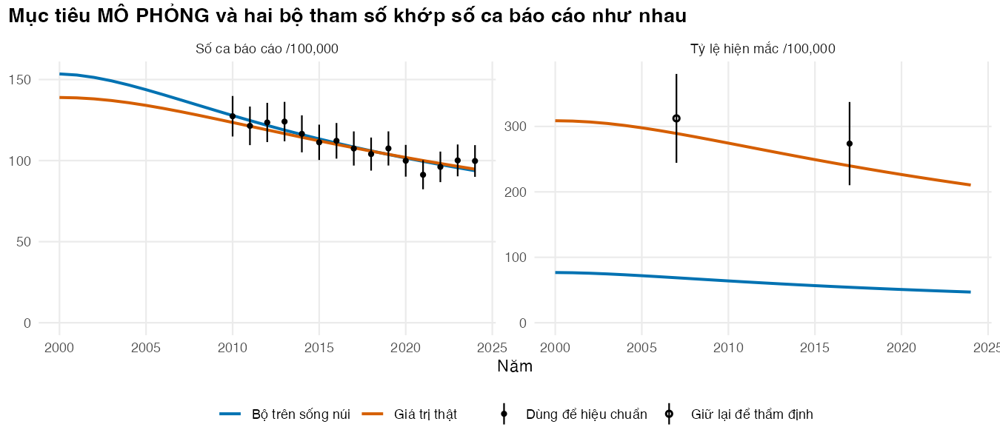

Chọn mục tiêu hiệu chuẩn, đo mức độ phù hợp và nhận ra khi tham số không nhận dạng được
Vì sao bạn nên quan tâm?
Ở mỗi huyện, tổ chống lao ghi từng ca bệnh vào sổ rồi báo cáo lên Chương trình Chống lao Quốc gia. Cộng cả nước, năm 2024 có 106,392 ca mới và tái phát được báo cáo, trong khi WHO ước tính khoảng 184,000 người mắc lao trong năm đó: chênh lệch cỡ 78,000 người không có tên trong sổ (World Health Organization 2026b). Họ vẫn có thể lây cho người khác. Mỗi ca mà hệ thống thường quy tìm ra tốn khoảng 6.7 triệu VNĐ riêng cho khâu chẩn đoán (tính cả những người phải xét nghiệm mới tìm được một ca), bằng 1.3 tháng lương tối thiểu vùng I (Schwalb và c.s. 2025; Chính phủ 2025). Không ai đếm trực tiếp được nhóm người bị bỏ sót, cũng không ai đo được bệnh lây nhanh đến đâu. Bài này giúp bạn quyết định phải đưa số liệu nào vào mô hình (số ca báo cáo, điều tra hiện mắc) để ước lượng được các con số đó.
Mục tiêu học tập
Sau bài này, bạn có thể:
Giải thích khi nào một tham số phải được hiệu chuẩn thay vì lấy thẳng từ y văn.
Định nghĩa mục tiêu hiệu chuẩn (calibration target) sao cho đầu ra mô hình đo đúng cùng một đại lượng, và đặt mục tiêu mô phỏng cạnh số liệu thật của Việt Nam.
Viết hàm hợp lý (likelihood) và tổng bình phương sai số có trọng số (weighted SSE) cho nhiều mục tiêu, và giải thích vì sao hai thước đo này gần như tương đương.
Kiểm chứng mô hình trước khi hiệu chuẩn: bước thời gian, bảo toàn dân số, so sánh với một bộ giải độc lập.
Phát hiện tính không nhận dạng được (non-identifiability) bằng mặt log của hàm hợp lý (log-likelihood) và nêu cách khắc phục.
Ý chính
Hiệu chuẩn mô hình (calibration) ước lượng các tham số không đo được bằng cách buộc đầu ra mô hình khớp số liệu quan sát: biết đầu ra, tìm đầu vào.
Bảy quyết định của một lần hiệu chuẩn: tham số, mục tiêu, thước đo mức độ phù hợp, cách tìm kiếm, tiêu chí chấp nhận, điểm dừng, cách đưa kết quả vào phân tích kinh tế (Vanni và c.s. 2011).
Mục tiêu phải đo cùng đại lượng với đầu ra mô hình (quần thể, định nghĩa ca bệnh, năm); sai định nghĩa thì “khớp” vẫn cho tham số sai. Điều tra năm 2017–2018 đo người từ 15 tuổi, nên phải quy về mọi lứa tuổi trước khi so.
Hàm hợp lý mô tả cách dữ liệu được sinh ra: ở đây điều tra theo nhị thức với cỡ mẫu hiệu dụng (effective sample size), số ca báo cáo theo phân phối chuẩn (dữ liệu thật thường cần Poisson hay nhị thức âm). Khi sai số chuẩn, tổng bình phương sai số có trọng số bằng −2 lần log của hàm hợp lý cộng hằng số.
Kiểm chứng mô hình trước khi hiệu chuẩn: bước thời gian đủ nhỏ, dân số được bảo toàn, khớp một bộ giải độc lập. Hiệu chuẩn không sửa được mô hình sai.
Số ca báo cáo ≈ tỷ suất phát hiện × thời gian chưa phát hiện, nên riêng nó không phân biệt “lây nhiều, phát hiện kém” với “lây ít, phát hiện tốt”; điều tra hiện mắc giải quyết điều đó. Không nhận dạng được là giới hạn của dữ liệu, không phải lỗi code.
Nội dung
Khi nào cần hiệu chuẩn
Ở M02, hầu hết tham số lấy được từ y văn. Mô hình lây truyền thì khác: hệ số lây truyền (β), tỷ suất phát hiện ca bệnh hay xu hướng lây truyền theo thời gian không nghiên cứu nào đo trực tiếp được. Ta chỉ thấy hệ quả của chúng, như số ca được báo cáo hay tỷ lệ hiện mắc trong một cuộc điều tra. Hiệu chuẩn tìm các giá trị tham số làm mô hình tái tạo được những con số đó (Stout và c.s. 2009).
Xác minh mô hình (verification, M02 Bài 5) hỏi code có đúng thiết kế không; thẩm định mô hình (validation, Bài 4) hỏi mô hình có phản ánh đúng thực tế không; hiệu chuẩn là bước ước lượng nằm giữa. Ba mô hình lao gần đây cho Việt Nam đều được hiệu chuẩn theo số liệu trong nước trước khi dùng để đánh giá can thiệp (Horton và c.s. 2022; Bui và c.s. 2025; Schwalb và c.s. 2025).
Ví dụ xuyên suốt: diễn tiến tự nhiên của bệnh lao
Mô hình có sáu ngăn, tính theo tỷ lệ dân số. Người chết được thay bằng trẻ sinh vào ngăn S, nên dân số không đổi.
flowchart LR S["S: chưa nhiễm"] -- "λ(t)" --> E["E: tiềm ẩn sớm"] E -- "tiến triển nhanh" --> I["I: lao hoạt động,<br/>chưa phát hiện"] E -- "ổn định" --> L["L: tiềm ẩn muộn"] L -- "tái hoạt động" --> I L -- "tái nhiễm" --> E I -- "δ: phát hiện" --> T["T: đang điều trị"] I -- "tự khỏi" --> R["R: đã khỏi"] I -- "tử vong do lao" --> D(("tử vong")) T -- "hoàn thành" --> R T -- "tử vong do lao" --> D R -- "tái phát" --> I R -- "tái nhiễm" --> E
flowchart LR
S["S: chưa nhiễm"] -- "λ(t)" --> E["E: tiềm ẩn sớm"]
E -- "tiến triển nhanh" --> I["I: lao hoạt động,<br/>chưa phát hiện"]
E -- "ổn định" --> L["L: tiềm ẩn muộn"]
L -- "tái hoạt động" --> I
L -- "tái nhiễm" --> E
I -- "δ: phát hiện" --> T["T: đang điều trị"]
I -- "tự khỏi" --> R["R: đã khỏi"]
I -- "tử vong do lao" --> D(("tử vong"))
T -- "hoàn thành" --> R
T -- "tử vong do lao" --> D
R -- "tái phát" --> I
R -- "tái nhiễm" --> E
Lực lây nhiễm (force of infection) là \(\lambda(t) = \beta(t)\, I(t)\), với hệ số lây truyền giảm dần từ năm 2000:
Mô hình là một hệ phương trình vi phân thường. Ở M05 ta giải hệ này bằng deSolve cho một bộ tham số; hiệu chuẩn cần chạy hàng chục nghìn bộ, nên run_tb_model() tự cài bộ tích phân Runge–Kutta bậc 4 (RK4) bằng base R, mỗi bộ tham số một hàng của ma trận trạng thái. Với bước \(h\), RK4 tính bốn độ dốc \(k_1, \dots, k_4\) rồi cập nhật \(y_{t+h} = y_t + \tfrac{h}{6}(k_1 + 2k_2 + 2k_3 + k_4)\). Bước 0.50 năm cho các năm được báo cáo, sau 200 năm chạy khởi động (burn-in) với bước 1 năm để mô hình gần trạng thái cân bằng. Cách cho mỗi người rời ngăn ở cuối mỗi bước (kiểu chu kỳ của M02) kéo dài mọi thời gian cư trú thêm khoảng nửa bước, nên các thời gian 3 năm hay 6 tháng trong bảng tham số không còn đúng nghĩa; đó là lý do cần hiệu chỉnh nửa chu kỳ hoặc một bộ tích phân tốt hơn.
Tử vong nền không gõ tay mà lấy từ bảng sống WHO 2023 của Việt Nam, dùng chung cho cả khóa học (World Health Organization 2026a): \(\mu = 1/e_0\), với tuổi thọ lúc sinh \(e_0\) = 74.3 năm, tức 13.5 ca tử vong trên 1,000 người mỗi năm. Trong một quần thể có cỡ không đổi, lựa chọn này làm thời gian sống trung bình trong mô hình bằng đúng \(e_0\).
Tham số diễn tiến tự nhiên lấy từ y văn khi có thể. Lao phổi AFB dương, HIV âm, không điều trị có tỷ lệ tử vong 10 năm trung bình có trọng số 70% (khoảng 53%–86%); lao AFB âm cấy dương khoảng 20%; bệnh kéo dài khoảng 3 năm ở cả hai loại (Tiemersma và c.s. 2011). Mô hình chỉ có một ngăn lao hoạt động, nên dùng trung bình có trọng số theo tỷ lệ AFB dương. Tỷ lệ này lấy từ điều tra quốc gia 2017–2018: lao AFB dương chiếm 79 trong 322 ca trên 100,000 người lớn, tức khoảng 25% (Nguyen và c.s. 2020), cho tỷ lệ tử vong trung bình 32%. Có 14% người nhiễm lần đầu ở tuổi trưởng thành phát bệnh trong 5 năm đầu (Vynnycky và Fine 1997); ta dùng con số này gần đúng làm tỷ lệ tiến triển nhanh khỏi giai đoạn tiềm ẩn sớm, dài 2 năm (giá trị minh họa; có nghiên cứu cho rằng giai đoạn này ngắn hơn nhiều so với các mô hình cũ giả định (Ragonnet và c.s. 2017)). Mức bảo vệ 79% chống bệnh sau tái nhiễm lấy từ Andrews và c.s. (2012), cao hơn nhiều so với ước lượng của Vynnycky và Fine (1997), nên là một lựa chọn có ảnh hưởng. Tỷ suất tái hoạt động và tái phát là giá trị minh họa; các mô hình đã công bố dùng giá trị rất khác nhau cho chúng (Menzies và c.s. 2018).
Ba tham số được hiệu chuẩn, mỗi tham số trong một khoảng cho phép (khoảng tiên nghiệm là giá trị minh họa): hệ số lây truyền \(\beta\) (từ 4 đến 30 mỗi năm), tỷ suất phát hiện và bắt đầu điều trị \(\delta\), và tốc độ giảm lây truyền \(k_\beta\).
Mục tiêu hiệu chuẩn: mô phỏng và thật
Bài này dùng mục tiêu mô phỏng, sinh từ chính mô hình tại một bộ “giá trị thật” cộng sai số lấy mẫu. Vì biết đáp án, ta kiểm tra được mỗi phương pháp có tìm lại giá trị thật không (phép thử phục hồi tham số, parameter recovery test). Giá trị thật được chọn gần bộ khớp nhất với số liệu Việt Nam, nên thế giới mô phỏng trông giống Việt Nam năm 2017. Có ba loại mục tiêu:
Số ca được báo cáo mỗi năm từ 2010 đến 2024, với sai số báo cáo có hệ số biến thiên 5% (giá trị minh họa).
Một cuộc điều tra tỷ lệ hiện mắc năm 2017, dùng để hiệu chuẩn.
Một cuộc điều tra năm 2007, giữ lại để thẩm định ở Bài 4.
Đặt cạnh chúng là mục tiêu thật: số ca lao mới và tái phát mà Việt Nam báo cáo cho WHO, chia cho dân số của Ngân hàng Thế giới (World Health Organization 2026b; World Bank 2026b), và điều tra quốc gia lần 2. Năm 2021 bị loại vì số ca giảm mạnh do gián đoạn dịch vụ trong đại dịch COVID-19, điều mà mô hình này không mô tả (Bui và c.s. 2025). Điều tra chỉ đo người từ 15 tuổi, nên được nhân với tỷ lệ người lớn trong dân số (75.6% năm 2017 (World Bank 2026a)), giả định trẻ em gần như không có lao phổi có bằng chứng vi khuẩn. Ước tính tỷ lệ mới mắc và tử vong của WHO không dùng làm mục tiêu: chúng là kết quả của một mô hình khác, nên chỉ dùng để đối chiếu.
Độ chính xác của điều tra lấy từ thiết kế của điều tra tỷ lệ hiện mắc lao quốc gia lần 2: 61,763 người tham gia, tỷ lệ hiện mắc ở người từ 15 tuổi 322 (KTC 95%: 260–399) trên 100,000 (Nguyen và c.s. 2020). Khoảng tin cậy rộng hơn khoảng của mẫu ngẫu nhiên đơn vì điều tra lấy mẫu cụm, rồi bù trừ dữ liệu thiếu và gia quyền. Hệ số thiết kế hiệu dụng (effective design effect) suy ra từ khoảng tin cậy đã công bố:
ở đây deff ≈ 2.38. Con số này gộp ba nguồn: cụm, gia quyền và bù trừ dữ liệu thiếu. Riêng ước lượng thô (chưa bù trừ, chưa gia quyền), khoảng tin cậy trong bài báo cho hệ số 2.15, gần với giá trị lập kế hoạch cỡ mẫu của chính điều tra là 1.92 (Nguyen và c.s. 2020); vậy phần lớn hệ số hiệu dụng đến từ thiết kế cụm. Hàm hợp lý của điều tra dùng \(n_{\text{hiệu dụng}}\), không dùng \(n\).
Đo mức độ phù hợp
Gọi \(m_j(\theta)\) là đầu ra mô hình cho mục tiêu \(j\) khi tham số là \(\theta\). Với số ca báo cáo \(y_j\) có độ lệch chuẩn \(\sigma_j\), và điều tra có \(x\) ca trong \(n_{\text{hiệu dụng}}\) người:
với \(\pi(\theta)\) là tỷ lệ hiện mắc theo mô hình. Cộng các log-likelihood nghĩa là giả định sai số của các mục tiêu độc lập với nhau. Thước đo thứ hai là tổng bình phương sai số có trọng số:
Khi sai số tuân theo phân phối chuẩn, \(-2\ell(\theta) = \text{WSSE}(\theta) + \text{hằng số}\) (phần điều tra nhị thức chỉ xấp xỉ): chọn trọng số là chọn mức tin cậy cho từng mục tiêu. Trọng số tùy ý có thể chọn ra bộ “tốt nhất” khác và dẫn đến kết luận kinh tế khác (Enns và c.s. 2015).
Tính nhận dạng được
Gần trạng thái cân bằng, số ca báo cáo mỗi năm xấp xỉ \(\delta \times I\). Tích này giữ nguyên khi \(\delta\) tăng và \(I\) giảm, với \(\beta\) điều chỉnh theo. Kết quả là một “sống núi” (ridge): một dải dài các bộ tham số khớp số ca báo cáo như nhau. Điều tra đo \(I\) trực tiếp nên cắt ngang sống núi đó.
Để vẽ trên mặt phẳng, bài dùng hàm hợp lý profile (profile likelihood): với mỗi cặp \((\beta, \delta)\), lấy \(k_\beta\) khớp nhất. Vùng có log-likelihood thấp hơn cực đại không quá \(\chi^2_{2;\,0.95}/2 \approx\) 3.0 là vùng tin cậy 95% xấp xỉ. Các bộ khớp như nhau có thể cho dự báo và quyết định khác nhau (Alarid-Escudero và c.s. 2018). Cách khắc phục: thêm mục tiêu đo một tổ hợp tham số khác, dùng tiên nghiệm có thông tin (Bài 3), hoặc giảm số tham số hiệu chuẩn; luôn báo cáo vấn đề.
Thực hành
Nạp hàm dùng chung, số liệu Việt Nam dùng chung (vn_data.R) và hàm của module. tb_params() đọc bảng tham số rồi tính thêm các giá trị lấy từ dữ liệu chung, như tử vong nền từ bảng sống.
# Vietnamese text in figures needs a UTF-8 locale (Rscript may start in the "C" locale)if (!isTRUE(l10n_info()[["UTF-8"]])) invisible(Sys.setlocale("LC_CTYPE", "en_US.UTF-8"))source("../_shared/R/helpers.R")source("../_shared/R/vn_data.R") # course-wide Vietnamese data (life table, prices)source("code/model.R")library(ggplot2)p <-tb_params() # fixed parameters + values derived from shared datapc <-read_params("params/calibration.csv") # calibrated parameters: truth + prior boundsbounds <-prior_bounds(pc)th_true <-theta_true(pc)
Bảng tham số hiệu chuẩn chứa giá trị thật (cột value) và khoảng cho phép. Kiểm tra: số giá trị minh họa trong bảng tham số cố định, và ba giá trị suy ra từ dữ liệu chung.
# Three parameters cannot be observed directly: they will be calibratedcalib_tab <-attr(pc, "table")[, c("name", "value", "low", "high", "unit")]calib_tab
name value low high unit
1 beta 6.70 4.0 30.0 mỗi năm
2 delta 0.45 0.1 2.0 mỗi năm
3 k_beta 0.02 0.0 0.1 mỗi năm
# Fixed parameters: how many come from a verified source, how many are illustrative?fixed_tab <-attr(p, "table")table(illustrative = fixed_tab$illustrative)
illustrative
FALSE TRUE
27 22
# Values computed from the shared course data, e.g. background mortality from the WHO life tablederived_tab <-attr(p, "derived")[, c("name", "value", "unit")]derived_tab$value <-signif(derived_tab$value, 4)derived_tab[derived_tab$name %in%c("mu_bg", "age_tb", "yll_death"), ]
name value unit
1 mu_bg 0.01346 mỗi năm
2 age_tb 48.27000 tuổi
3 yll_death 29.84000 năm
22 trong 49 tham số cố định là giá trị minh họa hoặc lựa chọn mô hình hóa. Chạy mô hình một lần ở giá trị thật. Kiểm tra: dân số được bảo toàn, không ngăn nào âm, số ca báo cáo đúng bằng \(\delta \times\) thời gian chưa phát hiện, và mô hình đứng yên ở trạng thái cân bằng khi không có xu hướng giảm (\(k_\beta = 0\)).
# One run at the "true" values: annual outputs per 100,000 populationsim_true <-run_tb_model(th_true, p)show_years <-c("2000", "2007", "2017", "2024", "2035")out_true <-rbind(prevalence = sim_true$prev[1, show_years],notifications = sim_true$notif[1, show_years],incidence = sim_true$inc[1, show_years],tb_deaths = sim_true$deaths[1, show_years])round(out_true, 1)
# Sanity checks: the population is conserved and no compartment is negativestopifnot(abs(sum(sim_true$state_end) -1) <1e-10, all(sim_true$state_end >=0))# Notifications are detection rate x time spent undetected: an exact identity in this modelstopifnot(max(abs(sim_true$notif - th_true[["delta"]] * sim_true$prev)) <1e-8)# With no decline in transmission (k_beta = 0) the model must stay at its equilibriumth_flat <- th_trueth_flat["k_beta"] <-0sim_flat <-run_tb_model(th_flat, p)drift <- sim_flat$prev[1, "2035"] / sim_flat$prev[1, "2000"] -1round(drift, 4)
2035
-2e-04
stopifnot(abs(drift) <0.005)
Khi tắt xu hướng giảm, tỷ lệ hiện mắc chỉ trôi 0.02% trong 35 năm, nên trạng thái đầu kỳ đã gần cân bằng.
Trước khi hiệu chuẩn, kiểm chứng mô hình bốn cách: giảm bước thời gian 4 lần, so với deSolve (một bộ tham số, dung sai chặt), kiểm tra tổng các đạo hàm bằng 0, và kéo dài gấp đôi thời gian chạy khởi động. Kiểm tra: mọi chênh lệch phải nhỏ.
# Verification 1: make the step 4 times shorter. Results must hardly move.p_fine <- pp_fine$dt <- p$dt /4p_fine$dt_burnin <- p$dt_burnin /4set.seed(101)X_check <-rbind(th_true, lhs_sample(40, bounds$lower, bounds$upper)) # true values + 40 prior drawsouts <-c("prev", "notif", "inc", "deaths", "py_T")sim_a <-run_tb_model(X_check, p)sim_b <-run_tb_model(X_check, p_fine)rel_diff <-function(a, b) abs(a - b) /pmax(abs(b), 1) # relative to the finer run, floor 1 per 100,000step_check <-rbind(at_true_values =sapply(outs, function(o) max(rel_diff(sim_a[[o]][1, ], sim_b[[o]][1, ]))),over_prior =sapply(outs, function(o) max(rel_diff(sim_a[[o]], sim_b[[o]]))))step_check
stopifnot(desolve_diff <1e-4)# Verification 3: every flow leaves one compartment and enters another (or is a death replaced# by a birth), so the six derivatives of a random state sum to zeroset.seed(102)y_rand <-cbind(t(apply(matrix(runif(60), 10), 1, function(v) v /sum(v))), matrix(0, 10, 5))d_rand <-tb_deriv(y_rand, beta_t = th_true[["beta"]], delta_t = th_true[["delta"]], r = r_check)stopifnot(max(abs(rowSums(d_rand[, 1:6]))) <1e-12)# Verification 4: does the starting state still matter? Double the burn-in.p_long <- pp_long$burnin_years <-2* p$burnin_yearsburnin_effect <-run_tb_model(th_true, p_long)$prev[1, "2017"] / sim_true$prev[1, "2017"] -1round(burnin_effect, 4)
2017
-4e-04
stopifnot(abs(burnin_effect) <0.005)
Giảm bước 4 lần đổi kết quả tối đa 0.0002% ở giá trị thật và 0.00% trên 40 điểm rút từ tiên nghiệm; deSolve khác tối đa 0.0002%; gấp đôi thời gian chạy khởi động đổi tỷ lệ hiện mắc năm 2017 chỉ 0.04%. Bước thời gian không còn là nguồn sai số đáng kể ở vùng tham số hợp lý. Ở rìa tiên nghiệm, nơi bệnh gần như tự tắt, thời gian chạy khởi động vẫn ảnh hưởng, nhưng vùng đó có hợp lý rất thấp.
Sinh mục tiêu mô phỏng với seed cố định, nên mọi bài nhận cùng một bộ mục tiêu.
# SIMULATED targets: model output at the true values + sampling error (seed fixed)targets <-make_targets(p, pc, seed =2025)# Design effect of the real 2017-2018 survey, backed out of its published 95% CIreal <- fixed_tab[fixed_tab$name =="vn_prev2017", ]deff <-survey_deff(p$survey_n, real$value, real$low, real$high)n_eff <- targets$n_eff[targets$type =="prev"][1]c(design_effect =round(deff, 2), n_survey = p$survey_n, n_effective = n_eff)
expected <-n_targets_expected(p)stopifnot(nrow(targets) == expected[["total"]], sum(targets$use =="calibration") == expected[["calibration"]], n_eff < p$survey_n /2) # the text says the effective sample size is below half of the participants
Có 16 mục tiêu hiệu chuẩn và 1 mục tiêu giữ lại. Cỡ mẫu hiệu dụng của mỗi điều tra là 25,933 người, chưa bằng nửa số người tham gia. Tiếp theo, dựng bộ mục tiêu thật theo đúng định dạng đó và đặt hai bộ cạnh nhau. Kiểm tra: ở năm 2017, mô hình tại giá trị thật lệch số liệu Việt Nam không quá 15% ở cả ba chỉ số.
# REAL Vietnamese data next to the simulated targets: WHO notifications (new and relapse)# per 100,000, and the 2017-2018 survey turned into an all-age prevalence. Same format as# `targets`, so every function of the module works with either set.targets_vn <-make_targets_vn(p)who <-vn_tb_data()side <-data.frame(type = targets$type, year = targets$year, use = targets$use,simulated =round(targets$value, 1),real_vn =round(targets_vn$value[match(paste(targets$type, targets$year),paste(targets_vn$type, targets_vn$year))], 1))side
# Context the targets do not contain: WHO incidence and TB mortality estimates, and the# model at its "true" valuesyrs_ctx <-c("2010", "2017", "2024")ctx_tab <-rbind(who_incidence = who$inc_100k[match(yrs_ctx, who$year)],model_incidence = sim_true$inc[1, yrs_ctx],who_tb_deaths = who$mort_hivneg_100k[match(yrs_ctx, who$year)],model_tb_deaths = sim_true$deaths[1, yrs_ctx])round(ctx_tab, 1)
# Statements in the text: the simulated world is close to Viet Nam in 2017 (within 15%) ...ratio_2017 <-c(notif = sim_true$notif[1, "2017"][[1]] / who$notif_100k[who$year ==2017],prev = sim_true$prev[1, "2017"][[1]] / targets_vn$value[targets_vn$type =="prev"],inc = sim_true$inc[1, "2017"][[1]] / who$inc_100k[who$year ==2017])round(ratio_2017, 2)
notif prev inc
1.00 0.99 0.99
stopifnot(all(abs(ratio_2017 -1) <0.15))# ... it declines faster than the real notifications, and it has far more TB deaths than WHO estimatesnotif_change <-c(simulated = sim_true$notif[1, "2024"][[1]] / sim_true$notif[1, "2010"][[1]] -1,real = who$notif_100k[who$year ==2024] / who$notif_100k[who$year ==2010] -1)round(notif_change, 3)
Năm 2017, thế giới mô phỏng gần Việt Nam: tỷ số mô hình/thật là 1.00 cho số ca báo cáo, 0.99 cho tỷ lệ hiện mắc và 0.99 cho tỷ lệ mới mắc. Hai khác biệt cần biết. Từ 2010 đến 2024, số ca báo cáo mô phỏng giảm 23%, còn số ca báo cáo thật chỉ giảm 5%. Và mô hình cho số tử vong do lao gấp 2.6 lần ước tính của WHO năm 2024: tỷ lệ tử vong lấy từ diễn tiến tự nhiên trước thời kỳ có thuốc (Tiemersma và c.s. 2011) có thể không còn đúng với người bệnh ngày nay, hoặc WHO ước tính thấp. Mô hình không giải quyết được mâu thuẫn này; ta ghi lại nó để thẩm định ở Bài 2 và Bài 4.
real_df <-rbind(data.frame(year = targets$year, value = targets$value, lo = targets$value -1.96* targets$sd,hi = targets$value +1.96* targets$sd, what =ifelse(targets$type =="notif","Số ca báo cáo /100,000", "Tỷ lệ hiện mắc /100,000"), source ="Mục tiêu mô phỏng"),data.frame(year = targets_vn$year, value = targets_vn$value, lo = targets_vn$value -1.96* targets_vn$sd,hi = targets_vn$value +1.96* targets_vn$sd, what =ifelse(targets_vn$type =="notif","Số ca báo cáo /100,000", "Tỷ lệ hiện mắc /100,000"), source ="Việt Nam (WHO, điều tra 2017-2018)"),data.frame(year = who$year[who$year >=2010], value = who$inc_100k[who$year >=2010],lo = who$inc_100k_lo[who$year >=2010], hi = who$inc_100k_hi[who$year >=2010],what ="Mới mắc /100,000 (chỉ để đối chiếu)", source ="Việt Nam (WHO, điều tra 2017-2018)"))yrs_all <-as.numeric(colnames(sim_true$notif))model_df <-rbind(data.frame(year = yrs_all, value = sim_true$notif[1, ], what ="Số ca báo cáo /100,000"),data.frame(year = yrs_all, value = sim_true$prev[1, ], what ="Tỷ lệ hiện mắc /100,000"),data.frame(year = yrs_all, value = sim_true$inc[1, ], what ="Mới mắc /100,000 (chỉ để đối chiếu)"))model_df <- model_df[model_df$year >=2005& model_df$year <=2024, ]fig_real <-ggplot(real_df, aes(year, value, colour = source)) +geom_line(data = model_df, aes(year, value), inherit.aes =FALSE, colour ="grey55", linewidth =0.7) +geom_pointrange(aes(ymin = lo, ymax = hi), size =0.25, position =position_dodge(width =0.6)) +facet_wrap(~what, scales ="free_y") +scale_colour_manual(values = pal_course[c(1, 2)], name =NULL) +expand_limits(y =0) +labs(x ="Năm", y =NULL,title ="Mục tiêu mô phỏng và số liệu thật của Việt Nam (đường xám: mô hình tại giá trị thật)") +theme_course()save_fig(fig_real, "l01-real-vn.png", width =9.5, height =4)

Mục tiêu mô phỏng (xanh) và số liệu thật của Việt Nam (cam). Thanh dọc: khoảng 95% của mục tiêu; với tỷ lệ mới mắc là khoảng bất định của WHO. Đường xám: mô hình tại giá trị thật.
Đo mức độ phù hợp ở giá trị thật và ở một bộ sai (tỷ suất phát hiện gấp đôi). Kiểm tra: bộ sai có log-likelihood thấp hơn.
# Goodness of fit of the true values: log-likelihood and weighted SSEgof_true <-c(loglik_notif =loglik_targets(sim_true, targets, types ="notif"),loglik_prev =loglik_targets(sim_true, targets, types ="prev"),loglik_total =loglik_targets(sim_true, targets),wsse_total =wsse_targets(sim_true, targets))round(gof_true, 2)
Ở giá trị thật, log-likelihood tổng là -47.30 và WSSE là 9.96. Bộ sai cho log-likelihood -369.29. Lưu ý: giá trị thật không nhất thiết khớp tốt nhất, vì mục tiêu có nhiễu (Bài 2).
Chạy mô hình cho cả một lưới ba chiều bằng một lần gọi hàm, rồi tính hàm hợp lý profile cho ba tập mục tiêu. Kiểm tra: vùng tin cậy khi dùng cả hai loại mục tiêu nhỏ hơn khi chỉ dùng số ca báo cáo.
# Log-likelihood over a 3-D grid of the calibrated parameters (about 43,000 runs, vectorised)grid <-expand.grid(beta =seq(bounds$lower["beta"], bounds$upper["beta"], by =0.5),delta =seq(bounds$lower["delta"], bounds$upper["delta"], by =0.05),k_beta =seq(bounds$lower["k_beta"], bounds$upper["k_beta"], by =0.005))sim_grid <-run_tb_model(as.matrix(grid), p)dim(sim_grid$notif)
[1] 43407 36
# Profile log-likelihood: for each (beta, delta) pair keep the best-fitting k_betapair_key <-paste(grid$beta, grid$delta)pairs_bd <-unique(grid[, c("beta", "delta")])profile_ll <-function(ll) { best <-tapply(ll, pair_key, max) prof <-as.vector(best[paste(pairs_bd$beta, pairs_bd$delta)]) prof -max(prof) # 0 at the best pair}target_sets <-list("Chỉ dùng số ca báo cáo"="notif", "Chỉ dùng điều tra hiện mắc"="prev","Cả hai loại mục tiêu"=c("notif", "prev"))surf <-NULLfor (nm innames(target_sets)) { ll <-loglik_targets(sim_grid, targets, types = target_sets[[nm]]) surf <-rbind(surf, data.frame(pairs_bd, d_ll =profile_ll(ll), targets = nm))}surf$targets <-factor(surf$targets, levels =names(target_sets))surf$d_ll_clip <-pmax(surf$d_ll, -30)# Share of (beta, delta) pairs inside the approximate 95% region (profile > -3.0)cut_95 <--qchisq(0.95, 2) /2region_share <-tapply(surf$d_ll > cut_95, surf$targets, mean)round(region_share, 3)
Chỉ dùng số ca báo cáo Chỉ dùng điều tra hiện mắc
0.075 0.467
Cả hai loại mục tiêu
0.004
stopifnot(region_share[["Cả hai loại mục tiêu"]] < region_share[["Chỉ dùng số ca báo cáo"]])# How far the notification-only region reaches along delta, as a share of delta's prior rangein_region_n <- surf$d_ll > cut_95 & surf$targets =="Chỉ dùng số ca báo cáo"delta_region <-range(surf$delta[in_region_n])delta_span_notif <-diff(delta_region) / (bounds$upper[["delta"]] - bounds$lower[["delta"]])round(c(delta_region, share_of_prior_range = delta_span_notif), 2)
share_of_prior_range
0.1 2.0 1.0
stopifnot(delta_span_notif >0.7) # the text says the region is a long ridge in delta
Hình sau vẽ ba bản đồ profile cạnh nhau để so vùng tin cậy giữa ba tập mục tiêu; vùng trong đường trắng càng nhỏ thì mục tiêu càng nhiều thông tin.
fig_surface <-ggplot(surf, aes(beta, delta)) +geom_raster(aes(fill = d_ll_clip)) +geom_contour(aes(z = d_ll), breaks = cut_95, colour ="white", linewidth =0.6) +annotate("point", x = th_true[["beta"]], y = th_true[["delta"]], shape =4, size =3,stroke =1.2, colour = pal_course[2]) +facet_wrap(~targets) +scale_fill_gradient(low ="grey95", high = pal_course[1], name ="Log-likelihood\n(so với cực đại)") +labs(x ="beta (hệ số lây truyền, /năm)", y ="delta (tỷ suất phát hiện, /năm)",title ="Hàm hợp lý profile: số ca báo cáo tạo một sống núi dài, điều tra hiện mắc cắt ngang nó") +theme_course() +theme(legend.position ="right")save_fig(fig_surface, "l01-gof-surface.png", width =9, height =3.8)

Hàm hợp lý profile theo \((\beta, \delta)\) với ba tập mục tiêu. Đường trắng: vùng tin cậy 95% xấp xỉ. Dấu x: giá trị thật.
Lưới có 43,407 bộ tham số. Chỉ với số ca báo cáo, vùng tin cậy chiếm 7.5% lưới \((\beta, \delta)\) nhưng trải từ \(\delta\) = 0.10 đến 2.00, tức 100% khoảng tiên nghiệm của \(\delta\). Thêm điều tra hiện mắc thu nhỏ vùng này còn 0.4%. Lấy một bộ trên sống núi nhưng có \(\delta\) lớn:
# Two parameter sets that fit the notifications equally well but disagree on prevalencell_notif_grid <-loglik_targets(sim_grid, targets, types ="notif")on_ridge <-which(ll_notif_grid >max(ll_notif_grid) -1& grid$delta >1.2)alt <-unlist(grid[on_ridge[which.max(ll_notif_grid[on_ridge])], CALIB_NAMES])sim_alt <-run_tb_model(alt, p)ridge_tab <-rbind(true_values =c(th_true, notif_2017 = sim_true$notif[1, "2017"][[1]],prev_2017 = sim_true$prev[1, "2017"][[1]],ll_notif =loglik_targets(sim_true, targets, "notif"),ll_total =loglik_targets(sim_true, targets)),ridge_set =c(alt, notif_2017 = sim_alt$notif[1, "2017"][[1]],prev_2017 = sim_alt$prev[1, "2017"][[1]],ll_notif =loglik_targets(sim_alt, targets, "notif"),ll_total =loglik_targets(sim_alt, targets)))round(ridge_tab, 3)
prev_ratio <- sim_true$prev[1, "2017"][[1]] / sim_alt$prev[1, "2017"][[1]]# The text says the ridge set fits the notifications as well as the true values (within 2 log-likelihood units)stopifnot(prev_ratio >1.5, abs(ridge_tab["ridge_set", "ll_notif"] - ridge_tab["true_values", "ll_notif"]) <2)
Bộ này khớp số ca báo cáo tương đương giá trị thật (log-likelihood -43.1 so với -43.6), nhưng tỷ lệ hiện mắc năm 2017 thấp hơn 4.4 lần. Hình dưới đặt hai quỹ đạo cạnh các mục tiêu để thấy chỉ điều tra mới phân biệt được chúng.
yrs <-as.numeric(colnames(sim_true$notif))traj <-rbind(data.frame(year = yrs, value = sim_true$notif[1, ], set ="Giá trị thật", what ="Số ca báo cáo /100,000"),data.frame(year = yrs, value = sim_alt$notif[1, ], set ="Bộ trên sống núi", what ="Số ca báo cáo /100,000"),data.frame(year = yrs, value = sim_true$prev[1, ], set ="Giá trị thật", what ="Tỷ lệ hiện mắc /100,000"),data.frame(year = yrs, value = sim_alt$prev[1, ], set ="Bộ trên sống núi", what ="Tỷ lệ hiện mắc /100,000"))obs <-data.frame(year = targets$year, value = targets$value, sd = targets$sd,what =ifelse(targets$type =="notif", "Số ca báo cáo /100,000", "Tỷ lệ hiện mắc /100,000"),use =ifelse(targets$use =="calibration", "Dùng để hiệu chuẩn", "Giữ lại để thẩm định"))fig_ridge <-ggplot(traj[traj$year <=2024, ], aes(year, value)) +geom_line(aes(colour = set), linewidth =0.9) +geom_pointrange(data = obs, aes(ymin = value -1.96* sd, ymax = value +1.96* sd, shape = use),size =0.3) +facet_wrap(~what, scales ="free_y") +scale_colour_manual(values = pal_course[c(1, 2)], name =NULL) +scale_shape_manual(values =c(16, 1), name =NULL) +expand_limits(y =0) +labs(x ="Năm", y =NULL,title ="Mục tiêu MÔ PHỎNG và hai bộ tham số khớp số ca báo cáo như nhau") +theme_course()save_fig(fig_ridge, "l01-ridge.png", width =9, height =4)

Hai bộ tham số khớp số ca báo cáo như nhau nhưng khác hẳn về tỷ lệ hiện mắc. Thanh dọc: khoảng 95% của mục tiêu mô phỏng.
Mẹo thực hành
Trước khi dùng số liệu thật, chạy phép thử phục hồi tham số như bài này. Một phép thử đầy đủ lặp lại trên nhiều bộ dữ liệu mô phỏng và kiểm tra tỷ lệ khoảng tin cậy chứa giá trị thật; bài này chỉ chạy một bộ nên không chứng minh được độ bao phủ.
Lưu mỗi mục tiêu thành một hàng, kèm năm, định nghĩa, sai số và vai trò, như bảng targets và targets_vn; nó sẽ thành phụ lục báo cáo.
Viết mô hình để chạy nhiều bộ tham số cùng lúc (mỗi bộ một hàng) và luôn dùng log-likelihood: tích của nhiều xác suất nhỏ sẽ tràn về 0.
Lỗi thường gặp
Coi điều tra phức hợp như mẫu ngẫu nhiên đơn. Mục tiêu trở nên “chắc chắn” quá mức và lấn át các mục tiêu khác. Dùng cỡ mẫu hiệu dụng.
Đầu ra và mục tiêu không cùng định nghĩa. Điều tra thật đo lao phổi có bằng chứng vi khuẩn ở người từ 15 tuổi; ngăn I ở đây gồm mọi lứa tuổi và mọi thể lao chưa phát hiện. Phép quy đổi trong bài chỉ là gần đúng.
Dùng ước tính của mô hình khác làm mục tiêu. Tỷ lệ mới mắc của WHO đã là đầu ra của một mô hình; đưa nó vào hàm hợp lý là đếm hai lần các giả định.
Trọng số tùy tiện. Không chia sai số cho độ lệch chuẩn thì mục tiêu có số lớn nhất quyết định kết quả.
Hiệu chuẩn một mô hình chưa kiểm chứng. Bước thời gian quá dài làm lệch mọi tồn kho và thời gian cư trú; hiệu chuẩn sẽ “bù” sai lệch đó vào các tham số.
Bài tập
Bài 1 (dễ). Nhân hệ số lây truyền với 0.5. Mục tiêu nào bị ảnh hưởng nhiều hơn: số ca báo cáo hay điều tra?
Log-likelihood của số ca báo cáo giảm mạnh hơn nhiều so với của điều tra, vì 15 mục tiêu số ca có sai số nhỏ, còn một điều tra chỉ có 25,933 người hiệu dụng. Tỷ lệ hiện mắc năm 2017 theo mô hình chỉ còn 70 trên 100,000.
Bài 2 (trung bình). Rút 500 bộ tham số ngẫu nhiên trong khoảng tiên nghiệm. Kiểm tra rằng −2 × log-likelihood và WSSE xếp hạng các bộ gần như giống hệt nhau (tương quan hạng Spearman), rồi lặp lại chỉ với 5% bộ tốt nhất.
Lời giải
# Exercise 2: -2 x log-likelihood and weighted SSE rank parameter sets almost identicallyset.seed(11)X_ex <-random_sample(ex2_n_draws, bounds$lower, bounds$upper)sim_ex2 <-run_tb_model(X_ex, p)ll_ex2 <-loglik_targets(sim_ex2, targets)wsse_ex2 <-wsse_targets(sim_ex2, targets)rank_cor <-cor(-2* ll_ex2, wsse_ex2, method ="spearman")# The same, among the best-fitting draws only (the part that matters for calibration)top <- ll_ex2 >=quantile(ll_ex2, 1- ex2_top_share)rank_cor_top <-cor(-2* ll_ex2[top], wsse_ex2[top], method ="spearman")round(c(all_draws = rank_cor, best_draws = rank_cor_top), 3)
all_draws best_draws
0.999 0.655
stopifnot(rank_cor >0.9, rank_cor_top < rank_cor) # the text says agreement is weaker among the best draws
Tương quan hạng là 0.999 trên toàn bộ các bộ, nhưng chỉ còn 0.655 trong nhóm tốt nhất. Hai thước đo chỉ khác nhau ở phần điều tra (nhị thức so với xấp xỉ chuẩn), và sự khác biệt đó nổi lên khi các bộ đã khớp gần nhau. Kiểm tra phần còn lại ở Bài 2: hai thước đo cho cùng một điểm tối ưu.
Bài 3 (khó hơn). Giả sử sai số báo cáo lớn hơn nhiều: hệ số biến thiên 20% thay vì 5%. Vùng tin cậy khi dùng cả hai loại mục tiêu thay đổi thế nào? Giải thích.
Vùng tin cậy rộng ra từ 0.4% lên 2.9% lưới. Số ca báo cáo kém chính xác thì chứa ít thông tin hơn về \(\beta\) và \(k_\beta\); điều tra vẫn giữ \(\delta\) khỏi trôi dọc sống núi, nhưng mọi tham số đều kém chắc chắn hơn.
Tài liệu tham khảo
Alarid-Escudero, Fernando, Richard F. MacLehose, Yadira Peralta, Karen M. Kuntz, và Eva A. Enns. 2018. “Nonidentifiability in model calibration and implications for medical decision making”. Medical Decision Making 38 (7): 810–21. https://doi.org/10.1177/0272989X18792283.
Andrews, Jason R., Farzad Noubary, Rochelle P. Walensky, Rodrigo Cerda, Elena Losina, và C. Robert Horsburgh. 2012. “Risk of progression to active tuberculosis following reinfection with Mycobacterium tuberculosis”. Clinical Infectious Diseases 54 (6): 784–91. https://doi.org/10.1093/cid/cir951.
Bui, Viet Long, Romain Ragonnet, Angus E. Hughes, David S. Shipman, Emma S. McBryde, Binh Hoa Nguyen, Hoang Nam Do, Thai Son Ha, Greg J. Fox, và James M. Trauer. 2025. “Impact of case detection and COVID-19-related disruptions on tuberculosis in Vietnam: a modeling analysis”. The Journal of Infectious Diseases 232 (4): e682–90. https://doi.org/10.1093/infdis/jiaf406.
Enns, Eva A., Lauren E. Cipriano, Cyrena T. Simons, và Chung Yin Kong. 2015. “Identifying best-fitting inputs in health-economic model calibration: a Pareto frontier approach”. Medical Decision Making 35 (2): 170–82. https://doi.org/10.1177/0272989X14528382.
Horton, Katherine C., Richard G. White, Nguyen Binh Hoa, Hai Viet Nguyen, Roel Bakker, Tom Sumner, Elizabeth L. Corbett, và Rein M. G. J. Houben. 2022. “Population benefits of addressing programmatic and social determinants of gender disparities in tuberculosis in Viet Nam: a modelling study”. PLOS Global Public Health 2 (7): e0000784. https://doi.org/10.1371/journal.pgph.0000784.
Menzies, Nicolas A., Emory Wolf, David Connors, Meghan Bellerose, Alyssa N. Sbarra, Ted Cohen, Andrew N. Hill, và c.s. 2018. “Progression from latent infection to active disease in dynamic tuberculosis transmission models: a systematic review of the validity of modelling assumptions”. The Lancet Infectious Diseases 18 (8): e228–38. https://doi.org/10.1016/S1473-3099(18)30134-8.
Nguyen, Hai Viet, Edine W. Tiemersma, Hoa Binh Nguyen, Frank G. J. Cobelens, Alyssa Finlay, Philippe Glaziou, Cu Huy Dao, và c.s. 2020. “The second national tuberculosis prevalence survey in Vietnam”. PLoS ONE 15 (4): e0232142. https://doi.org/10.1371/journal.pone.0232142.
Ragonnet, Romain, James M. Trauer, Nick Scott, Michael T. Meehan, Justin T. Denholm, và Emma S. McBryde. 2017. “Optimally capturing latency dynamics in models of tuberculosis transmission”. Epidemics 21: 39–47. https://doi.org/10.1016/j.epidem.2017.06.002.
Schwalb, Alvaro, Katherine C. Horton, Jon C. Emery, Martin J. Harker, Lara Goscé, Lara D. Veeken, Frances L. Garden, và c.s. 2025. “Potential impact, costs, and benefits of population-wide screening interventions for tuberculosis in Viet Nam: a mathematical modelling study”. PLOS Global Public Health 5 (9): e0005050. https://doi.org/10.1371/journal.pgph.0005050.
Stout, Natasha K., Amy B. Knudsen, Chung Yin Kong, Pamela M. McMahon, và G. Scott Gazelle. 2009. “Calibration methods used in cancer simulation models and suggested reporting guidelines”. PharmacoEconomics 27 (7): 533–45. https://doi.org/10.2165/11314830-000000000-00000.
Tiemersma, Edine W., Marieke J. van der Werf, Martien W. Borgdorff, Brian G. Williams, và Nico J. D. Nagelkerke. 2011. “Natural history of tuberculosis: duration and fatality of untreated pulmonary tuberculosis in HIV negative patients: a systematic review”. PLoS ONE 6 (4): e17601. https://doi.org/10.1371/journal.pone.0017601.
Vanni, Tazio, Jonathan Karnon, Jason Madan, Richard G. White, W. John Edmunds, Anna M. Foss, và Rosa Legood. 2011. “Calibrating models in economic evaluation: a seven-step approach”. PharmacoEconomics 29 (1): 35–49. https://doi.org/10.2165/11584600-000000000-00000.
Vynnycky, E., và P. E. Fine. 1997. “The natural history of tuberculosis: the implications of age-dependent risks of disease and the role of reinfection”. Epidemiology and Infection 119 (2): 183–201. https://doi.org/10.1017/s0950268897007917.
World Health Organization. 2026a. “Global Health Observatory: life tables by country, Viet Nam, 2023 (indicators LIFE_0000000029 nMx, LIFE_0000000030 nqx, LIFE_0000000035 ex)”. 2026. https://ghoapi.azureedge.net/api/LIFE_0000000029.
———. 2026b. “Global Health Observatory: tuberculosis indicators for Viet Nam, 2000–2024 (TB_c_newinc, MDG_0000000020, TB_e_inc_num, MDG_0000000017, TB_Notification_agesex_num)”. 2026. https://ghoapi.azureedge.net/api/TB_c_newinc.
Kịch bản video (~13 phút)
#
Slide
Lời giảng chính
Hình/Code
1
Người bệnh không có tên trong sổ
106,392 ca báo cáo so với 184,000 ca ước tính năm 2024; β, δ không đo được
callout đầu bài
2
Hiệu chuẩn, xác minh, thẩm định
ước lượng / code đúng / phản ánh thực tế
bảng so sánh
3
Bảy quyết định
tham số, mục tiêu, GOF, tìm kiếm, chấp nhận, dừng, tích hợp
Vanni 2011
4
Mô hình lao 6 ngăn
λ(t) = β(t)·I; hệ ODE; RK4 vector hóa; tử vong nền từ bảng sống